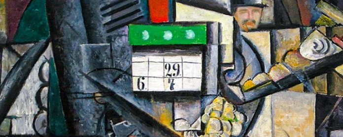
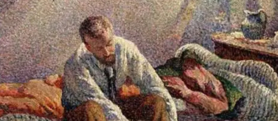
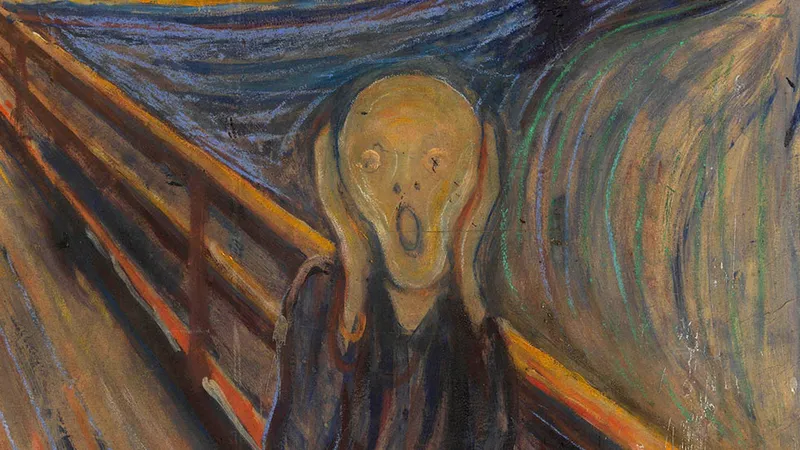

Fauvism
Portrait of Madame Matisse by Henri Matisse, 1905. via the National Gallery of Denmark, Copenhagen.

Suprematism
Woman at the Tram Stop by Kazimir Malevich, 1913, via Stedelijk Museum, Amsterdam.

Cubism
Three Musicians by Pablo Picasso, 1921, via the Pablo Picasso Museum, Barcelona.

Pointillist
Morning, Interior, by Maximilien Luce, 1890, via the Metropolitan Museum of Art, New York City.

Expressionism
The Scream by Edvard Munch, 1983, via the Munch Museum, Oslo.
About Section
About content goes here
Services
Services content goes here
Contact
Contact content goes here